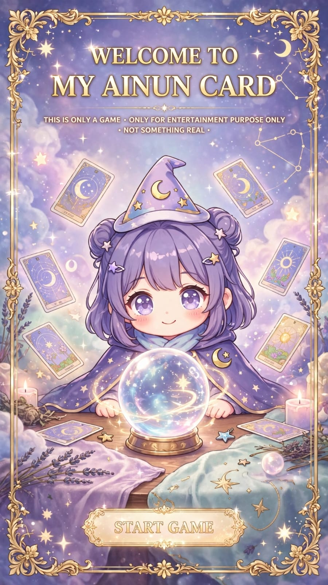

✨ START READING ✨
Original My Ainun Creation • 22 Cards • Public Domain Inspired
🔮
What's Your Name?
Enter your name to begin the reading
SEE MY DESTINY 🔮
Choose 3 Cards of Your Destiny (22 Cards)
0
/3 selected • Shuffles every time
REVEAL MY LONG READING ✨